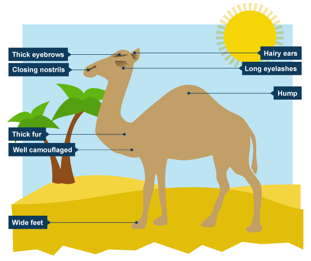

Climate and Adaptations
The ability of an organism to develop certain features which improve the chances of its survival in the environment in which they live, is known as Adaptations. Animals are adapted to survive in the conditions in which they live. In other words, an adaptation is a trait of an organism that has been favoured by natural selection.
For example, we have the adaptations for a camel as depicted in the picture and don't forget to click on the picture to move to the next topic, DEFORESTATION AND ITS CAUSES
